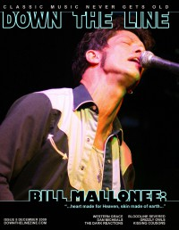

CMnexus
: Contemporary Christian culture, music, and media.
|
Bill MalloneeOn the cover
December 2009
Down The Line | Media coverage- Fall 1993 in True Tunes News "Taking Love Into Their Own Hands", by John J. Thompson
- Nov 1994 in Syndicate "Vigilante of Strugglleville"
- Aug 1997 in CCM "On The Beat: Too Sexy For Your Church?", by Marykay Selby
- Oct 1998 in CCM "Double Jeopardy: Music and Faith In Culture: Vigilante Justice", by Bruce A. Brown
- Win 1998 in True Tunes News "200-proof Rock & Roll", by J. Edward Keyes
- Nov 2000 in 7ball "Take Two", by Matt Simon
- Dec 2006 in CCM "Independents Day: Bill Mallonee", by Kate McDonald, Jay Swartzendruber
- Oct 2008 in Down The Line "Live Report: Eddie's Attic, Decatur, GA, August 13, 2008", by Steve Ruff
- Dec 2009 in Down The Line "...heart made for heaven, skin made for earth...", by Steve Ruff
- Apr 2010 in Down The Line "Eternal Sunrise, Eternal Sunset, Eternal Dawn & Gloaming", by Steve Ruff
- Jan 2011 in Down The Line "Bill Mallonee"
- Feb 2012 in Down The Line "Bill Mallonee, Vigilantes of Love"
- Jan 2013 in Down The Line "50 records in, and still pumping out pure quality", by Steve Ruff
- Oct 2016 in Down The Line "Bill Mallonee", by Doug Peterson
Albums & reviews:2008: Lower Case [mini EP] 2009: WPA Vol. 5: Cabin Songs 2010: WPA Vol. 9: Drifter Songs
2011: The Power and The Glory 2011: Songs of Heartland and Grieving 2011: Ti Jean: Hearts Crossing the Center Line
2012: Hardscrabble Dreams Published articles1 article credited in Sojourners: 2003.Books about Bill Mallonee
- "Bill Mallonee" in Reel to Real by Reel: Rock'in the Interviews (Chris Callaway, 2015).
|
|